A tour of plaa
This tour walks through what plaa does, in the order you are likely to meet it. On macOS, use ⌘ where it says Ctrl. The keyboard shortcuts are listed at the end, and can be changed in the settings file.
The screenshots show Big Buck Bunny, © 2008 Blender Foundation, under CC BY 3.0.
Opening
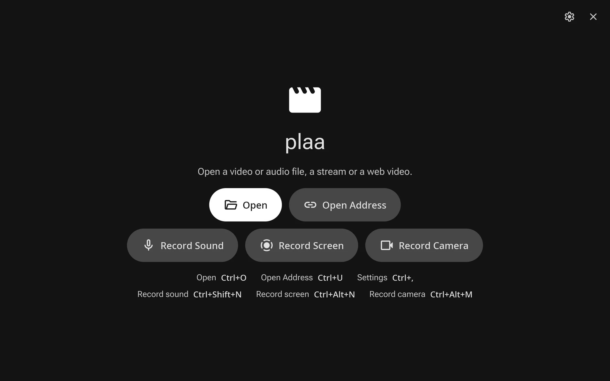
Started on its own, plaa offers to open a file or an address, or to
record. Open a file with Ctrl+O, from the file manager's Open With, from
the command line (plaa film.mkv), or by dropping it on a
window. Open Address (Ctrl+U) takes a stream or a web page, and offers
the addresses opened lately again.
Each file plays in a window of its own, and there is one running plaa: a file opened again from the file manager or the command line goes to the running one, as files opened from Finder do on macOS. To have video and sound files open in plaa, use Make Default in Settings.
Playing
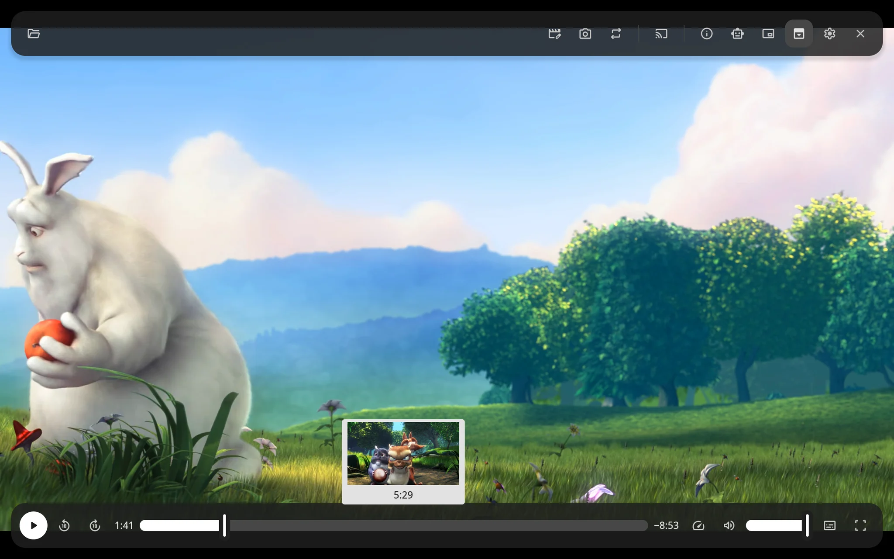
The toolbar and the playback controls float over the picture and slide away once the pointer rests or leaves the window, and come back when it moves. The floating bars button docks them above and below the picture instead, and on a narrow window the tools that do not fit go into the More menu.
Pointing at the timeline shows a picture from there, its time and its chapter; dragging it moves the picture with the handle, exactly. The arrow keys skip 5 seconds, J and L 10, and the comma and period keys step a frame. Speed goes from a quarter to three times, keeping the sound's pitch, and the volume and full screen are at the right of the controls.
Ctrl and the mouse wheel zoom in on the picture at the pointer, up to 16 times, and dragging it looks around. Picture in picture (Ctrl+Shift+P) keeps a small window over the others in a corner. plaa resumes each file where you left off, keeps the screen on while video plays, and keeps the computer awake while sound does.
Video is decoded on the graphics card where it can be, 8K at 60 frames a second included, and drawn by plaa's own shader: BT.601, BT.709 and BT.2020 colors, 8 to 16 bits, HDR10 and HLG tone mapped for an ordinary screen, and phone videos turned upright. The sound keeps in step with the picture by the output device's own clock.
Tracks and subtitles
plaa picks the audio and subtitle tracks in the languages Settings
prefer, and the menu at the right of the controls changes them. It shows
text subtitles (SubRip, WebVTT, MP4 text and more), ASS and SSA styled
as made through libass, and Blu-ray, DVD and DVB picture subtitles.
Subtitle files beside the video, such as Film.en.srt, or in a
Subs folder, are offered too.
A file's chapters are marked on the timeline and listed in a menu, and Page Up and Page Down move between them. Loop (Ctrl+L) plays the file over and over; B marks where an A-B loop starts, and B again where it ends.
Streams and web videos
plaa plays HTTP, HLS, DASH, RTSP and SRT addresses. Streams read ahead, and wait to read on rather than stutter over a slow network, marking on the timeline how far they have read; a spinner shows while they wait.
With yt-dlp installed, plaa also plays the videos on web pages such as YouTube's, with their titles, channels, chapters and thumbnails, and a web playlist becomes a plaa playlist. A stream or web video plays in the quality that fits your screen, or the one chosen from the quality menu, which also offers the sound alone.
Playlists
Files opened or dropped together play one after another, as do M3U and PLS lists, and in Settings plaa can list the other files in the opened file's folder. The playlist (Ctrl+P) shows beside the picture; P and N go to the previous and next item, and the next one plays when one ends.
Sound files
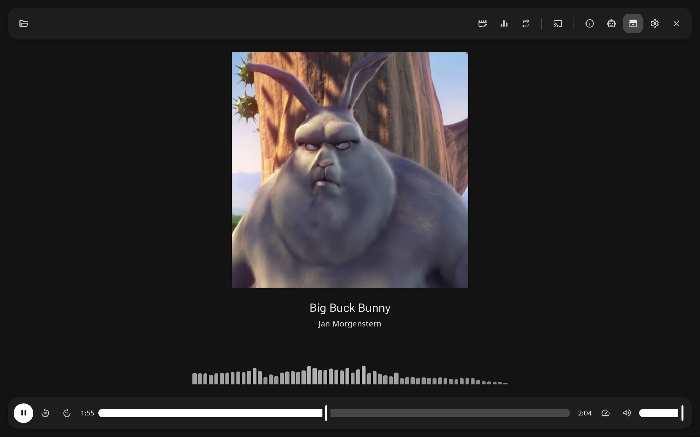
A sound file shows its cover, title, artist and album, with the spectrum of what you hear below them, as bars that rise with it and fall back slowly, or the file's waveform from start to end, the part played in the accent color, which a click or a drag seeks along.
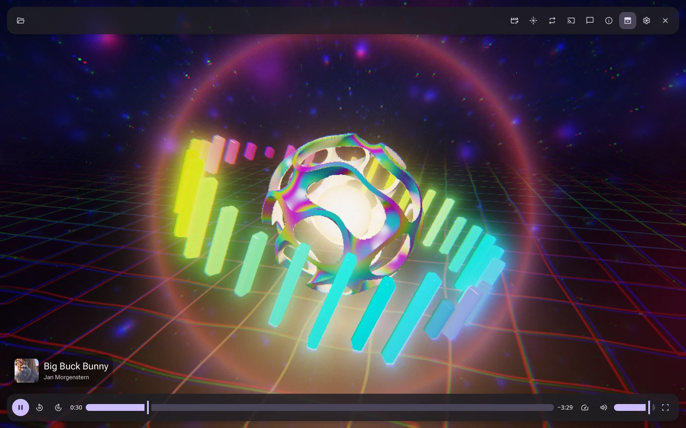
Or choose Prism from the visualizer menu: a scene in three dimensions that fills the window and moves with the music, a lace orb around a core that swells on each beat, ringed by glass shards rising with the spectrum, over a rippling grid of light.
Inspector
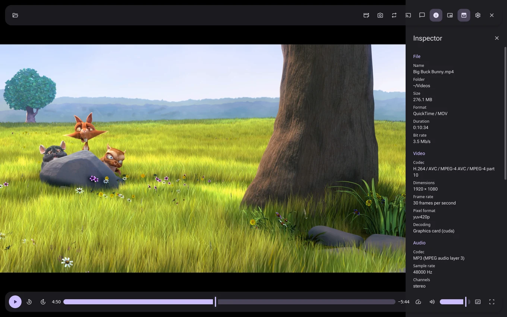
The inspector (Ctrl+I) shows what a file is made of: its name, folder, size, format, duration and bit rate, its tags, and each of its streams, with the video's codec, size, frame rate and pixel format and how it is decoded, and the sound's codec, rate, channels and language.
Trimming and splitting
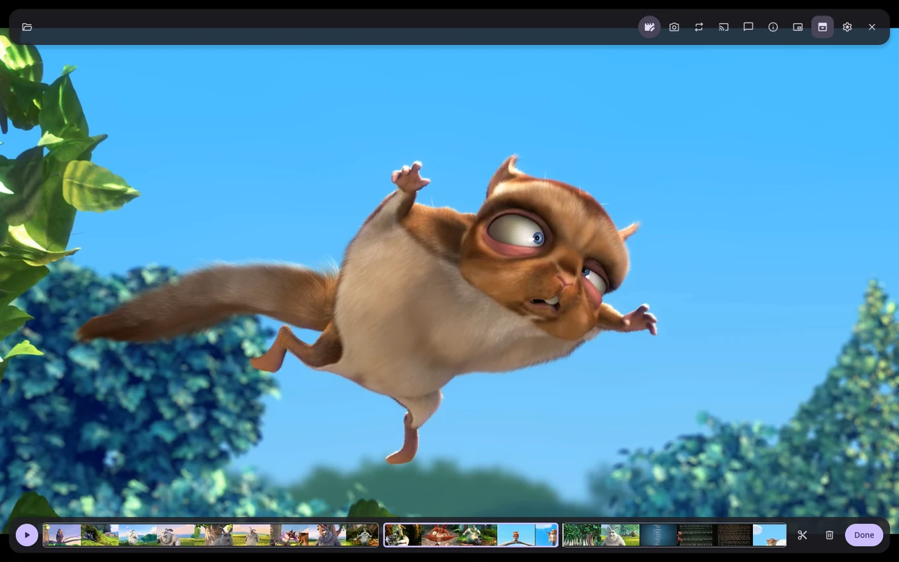
Trim (Ctrl+T) shows the file as a strip of pictures with a handle at each end, and plays the part kept over and over while you move them; I and O set them to where it plays. Split (Ctrl+Y) cuts the file into clips at the playhead, which you can drag into another order, trim one by one, or remove with Delete. Rotate and flip (Ctrl+Shift+L, R, H and V) turn the picture, and undo and redo cover every step.
The edit plays as it will be, clip after clip without a gap. Nothing changes in the file: the edit is kept until you export it, and closing the window with an edit not exported asks first.
Ask the assistant, or an agent, and the edit can mix files too: put in a part of another file, or play another file's sound or picture over a part, such as music under a video or a voice over it, or make a part silent or black. The clips show each file's pictures, and the edit plays and exports as it will be.
Exporting
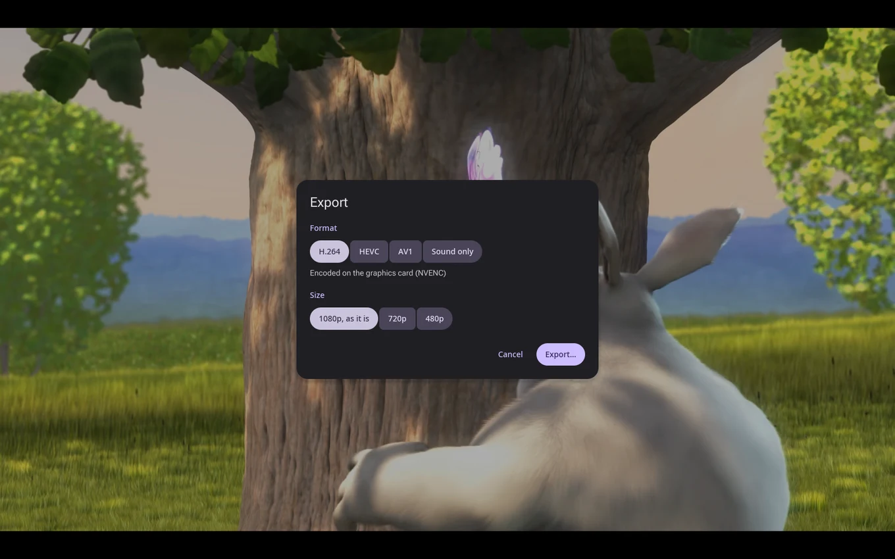
Export (Ctrl+E) saves what plays, as edited, as H.264, HEVC or AV1 with AAC sound, at the file's own size or smaller. plaa encodes on the graphics card where it can (NVENC, AMF, Quick Sync, VAAPI or VideoToolbox) and on the processor otherwise, and the dialog says which. HDR video keeps its colors in HEVC and AV1.
Sound only saves the sound alone: AAC, MP3 or Opus at a bit rate you choose, or lossless as FLAC, ALAC or WAV in 16 or 24 bits.
Recording
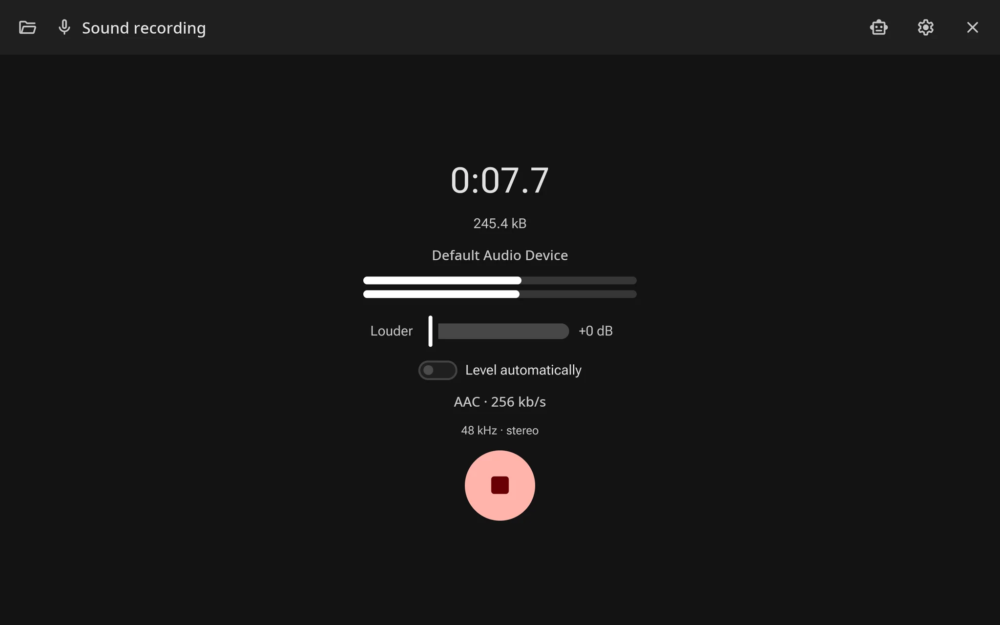
Record Sound (Ctrl+Shift+N) records a microphone, or what the computer plays where the system offers it, with a level meter. Louder takes a quiet input up to 30 dB higher, kept for each input, and Level automatically evens the level out. Space starts and stops; once it stops, plaa asks what to name the recording, then plays it, ready to trim and export.
Record Screen (Ctrl+Alt+N) records a screen or a window, or on Linux a region, with the pointer, and the sound of a microphone or of what the computer plays if you like, on the graphics card's encoder at 24 to 120 pictures a second. Recording a screen, plaa's own windows stay out of it on macOS; elsewhere the recording window steps aside, and the red dot in the tray on Linux, or opening plaa again, stops it.
Record Camera (Ctrl+Alt+M) records a camera, as QuickTime Player's New Movie Recording does, its picture shown mirrored while it records. Sound recordings go to Music, and screen and camera recordings to Videos (Movies on macOS), unless Settings choose other folders.
Casting
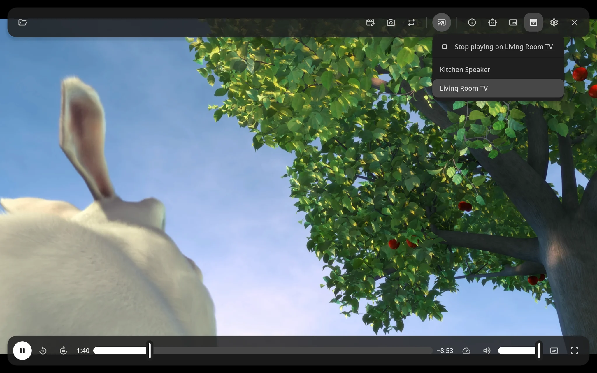
The Cast menu looks for Chromecasts and for TVs, speakers and programs that play DLNA on your network as it opens. Choose one, and plaa serves the file to it, or hands it the stream's address; plaa's own controls and timeline then play, pause and seek it there. When casting stops, the window goes on from where it got to.
Network audio
plaa takes part in AVB and Milan networks, the kind that links professional speakers, amplifiers and audio interfaces. In Settings, Network, choose the wired interface the network is on. With Send what plays on, plaa becomes a Milan talker of its own on Linux, and sends through the Mac's own AVB entity on macOS: the sound of the window last played goes out as a stream on the network's clock, which any Milan controller can connect.
The Network Audio button lists the listeners that can play plaa's sound, each with one button, and how the one chosen takes its stream, kept up to date as other controllers change it. The Connect menu, beside Open, lists the talkers plaa can listen to, and plays the one chosen in a window, as a file plays.
Where the switch has no AVB, plaa falls back to AVB Lite and sends each listener, up to five, a copy of its own. On Linux plaa keeps network time with ptp4l, starting its own service where nothing else runs one, and shares the network's reservations with triib's entity service where it runs. The README says what each system needs.
The assistant
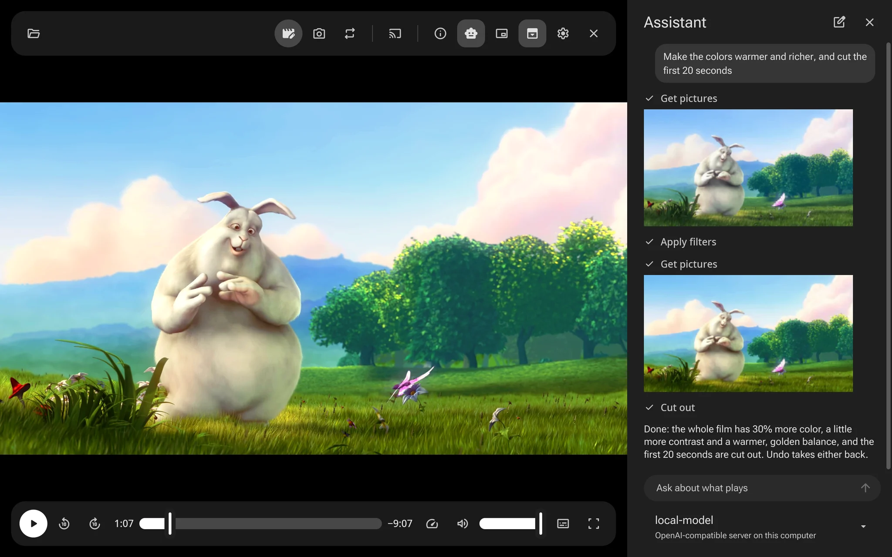
The assistant button opens a chat panel beside what plays. Ask about it, and the assistant looks with plaa's own tools, at the status, the file's streams, its pictures at any time, how loud it is and its subtitles, and plays, pauses, seeks, changes the sound or edits it for you, each step shown as it goes.
Use a local model that stays on your computer, such as Ollama's or one behind an OpenAI-compatible server, or a cloud model from Anthropic, OpenAI or Google with your own key, kept in the system's keychain. Add models in Settings, Assistant; they are shared with the other Scramble Tools apps, such as prev.
AI agents
Agents such as Claude Code can see what plays, read any part of it, and
control and edit the plaa you are using, through MCP. Add plaa to an
agent as an MCP server that runs plaa --mcp; for Claude
Code:
claude mcp add plaa -- plaa --mcpThe first time an agent connects, plaa asks whether to let it in. Settings, Agents, turns outside control off, lists the agents allowed, and has a switch for each kind of tool, seeing what plays, controlling playback, opening files or closing windows, and editing or exporting, that makes plaa ask before an agent's call runs. Every edit shows in the window as it is made, and undo takes it back. plaa bundles no model and listens on no network.
| Tool | What it does |
|---|---|
list_windows | plaa's windows: their numbers, titles, what they play and how |
get_status | A window's state, position, length, speed, volume, loop and tracks |
get_info | The file's format, tags, chapters and streams, and the window's list |
get_frame | The picture shown, as a PNG at most 1280 pixels across |
play, pause, seek, set_speed | Playback |
set_volume, set_loop, choose_tracks | The sound, looping, and the sound track and subtitles |
next_item, previous_item | Moving through a window's list |
set_fullscreen, focus_window | The window |
open, close_window | Opening a file or address, and closing a window |
get_frames | Pictures at any times, or spread over a part, as JPEGs, as edited |
get_levels | How loud each step is, and where it is silent |
get_subtitles | The subtitles' lines and their times, as they show in the edit |
get_sound | Up to a minute of sound, for models that hear |
get_edit | The clips, the files they play, and what replaces their picture or sound |
trim, cut, split, move_clip | Keeping a part, taking one out, splitting and ordering clips |
insert | Putting in part of another file, or of the same one |
replace | Another file's sound or picture over a part, or silence, or black |
turn_picture, undo | Turning or flipping the picture; undo, redo and undoing all |
export | Writing the edit to a new file, as the Export dialog does |
On each system
Media keys work, and what plays shows with its cover in the system's
own controls: MPRIS on Linux, which playerctl drives too, the
media flyout on Windows, and Now Playing on macOS. On macOS plaa has its
own menu bar, and on macOS and Windows title bars in plaa's colors. On
Linux, plaa's packages use the system's FFmpeg and sound server, PipeWire
or PulseAudio.
Settings
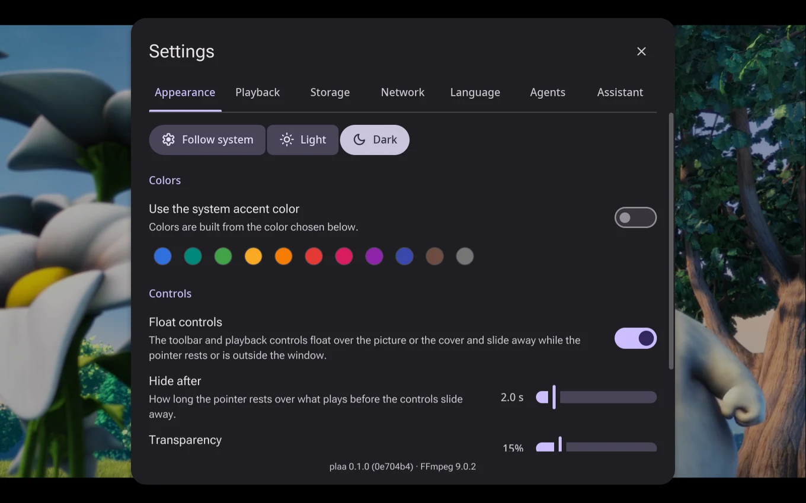
Settings (Ctrl+,) has seven tabs. Appearance chooses light or dark, the system's accent color or one of plaa's, and how the floating controls look and when they hide. Playback has hardware decoding, the sound output, resuming, folder playlists, the streams' quality, yt-dlp, and Make Default, which makes plaa the system's default app for video and sound files. Storage chooses the folders recordings and saved frames go to; Network, the AVB interface; Language, plaa's language and the languages tracks are chosen by; Agents and Assistant, what the previous sections describe.
plaa keeps its settings in ~/.config/plaa.toml on Linux,
%APPDATA%\plaa\plaa.toml on Windows and
~/Library/Application Support/plaa/plaa.toml on macOS. The
file's [keys] table changes the keyboard shortcuts, for every
system or for one:
[keys]
play-pause = ["Space", "P"]
screenshot = "Ctrl+Shift+S"Keyboard shortcuts
| Action | Shortcut |
|---|---|
| Play or pause | Space, K |
| Back, forward 5 seconds | Left, Right |
| Back, forward 10 seconds | J, L, Shift+Left, Shift+Right |
| Previous, next frame | , . |
| Back to the start | Home |
| Volume up, down | Up, Down |
| Mute | M |
| Slower, faster, normal speed | [, ], Backspace |
| Next subtitles, next audio track | C, A |
| Full screen | F, F11, and Escape to leave it |
| Loop, A-B loop | Ctrl+L, B |
| Previous, next in the playlist | P, N, Ctrl+Left, Ctrl+Right |
| Previous, next chapter | Page Up, Page Down |
| Playlist | Ctrl+P |
| Picture in picture | Ctrl+Shift+P |
| Zoom in, out at the pointer | Ctrl+wheel |
| Save the frame as a picture | S |
| Trim, split | Ctrl+T, Ctrl+Y |
| Trim from, to the playhead | I, O, while trimming |
| Rotate left, right | Ctrl+Shift+L, Ctrl+Shift+R |
| Flip horizontally, vertically | Ctrl+Shift+H, Ctrl+Shift+V |
| Undo, redo | Ctrl+Z, Ctrl+Shift+Z |
| Export | Ctrl+E |
| Record sound, the screen, a camera | Ctrl+Shift+N, Ctrl+Alt+N, Ctrl+Alt+M |
| Open, open address | Ctrl+O, Ctrl+U |
| Inspector | Ctrl+I |
| Settings | Ctrl+, |
| Close the window, quit | Ctrl+W, Ctrl+Q |